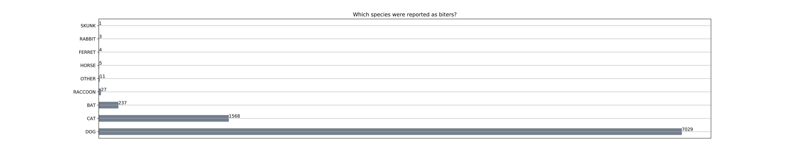
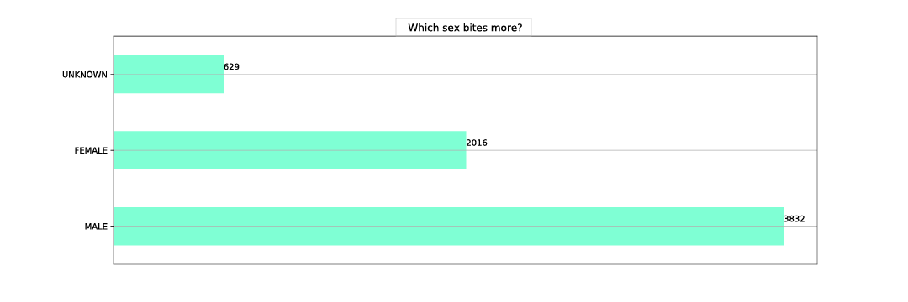
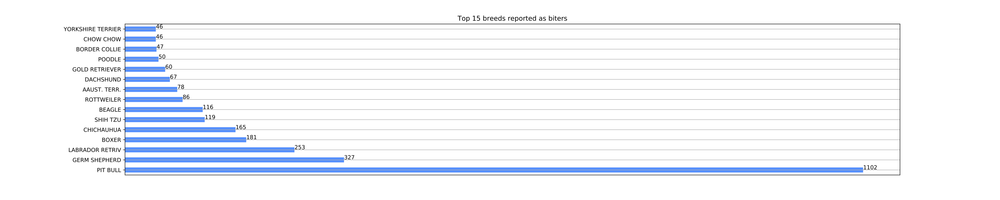
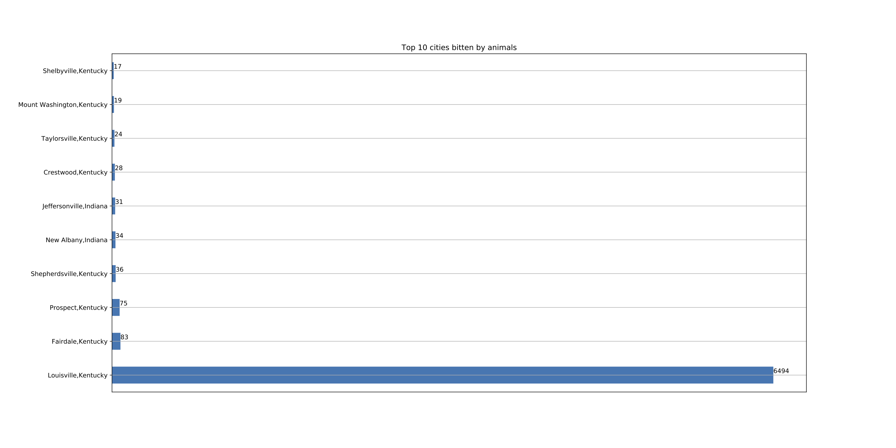

Which animal bite the most?

Source: Frida Cai
Boys or girls, which ones are better?

Source: Frida Cai
Which breed is the grumpiest?

Source: Frida Cai
Which city reports the most?

Source: Frida Cai